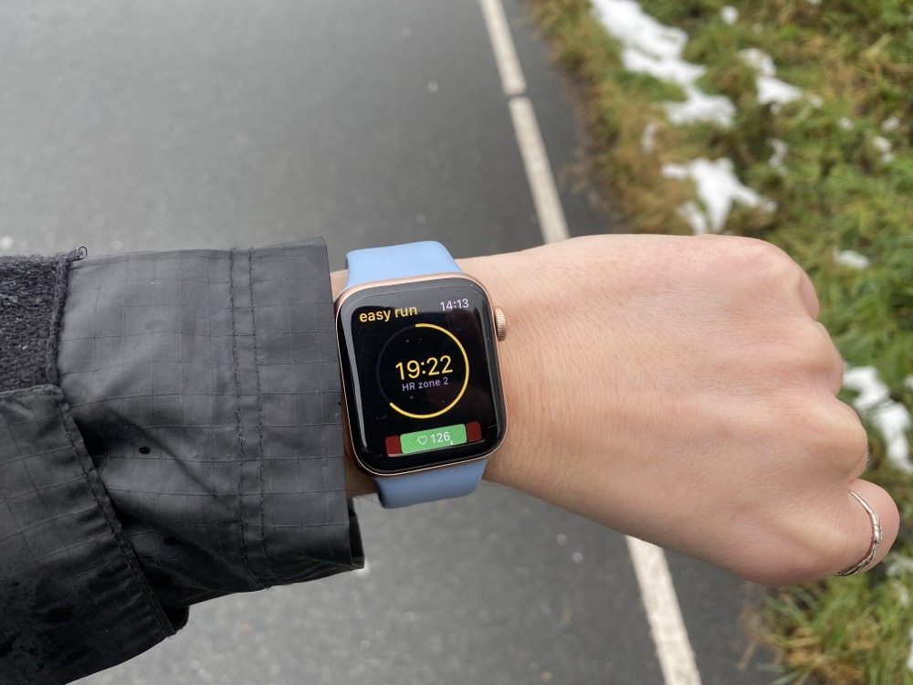
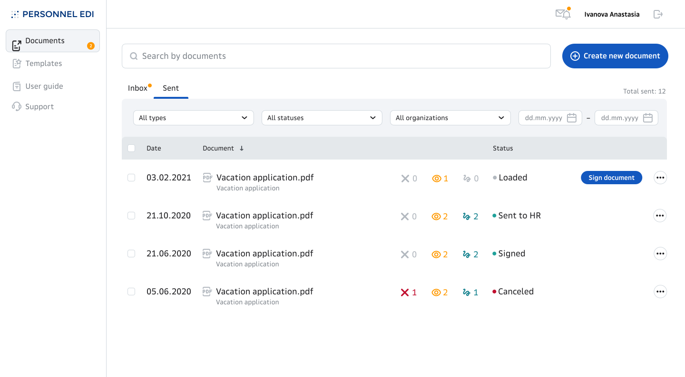
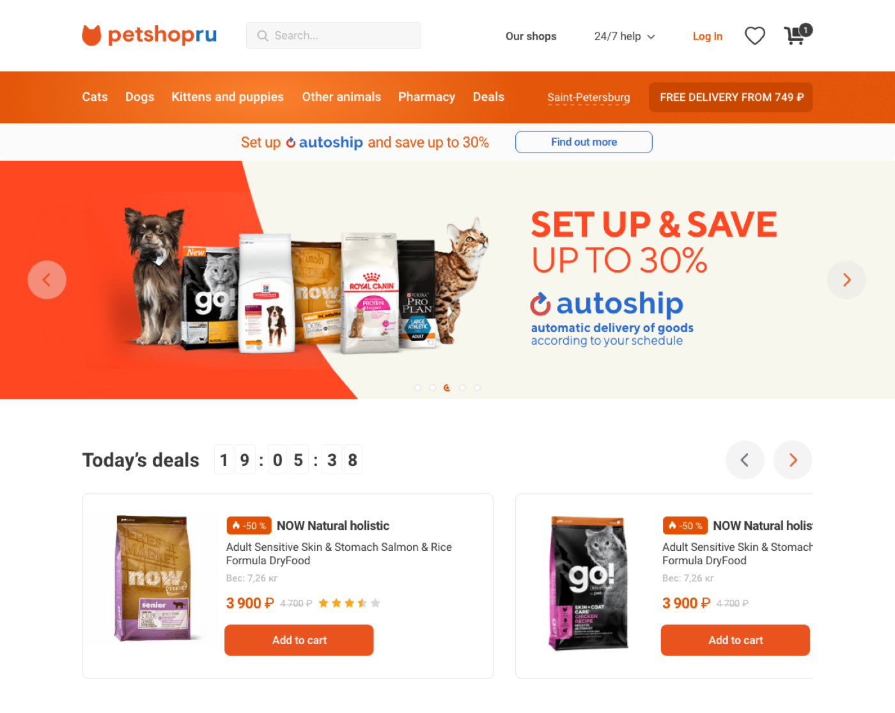

I design and ship products end‑to‑end — B2B SaaS to the App Store.
As the sole product designer, I drove the UX for a B2B HR platform that onboarded 70+ companies in 5 months. Working on a major e-commerce platform, I designed the checkout and customer education for a subscription delivery model new to the market. Most recently, I co-founded RunPlan, a structured running planner, taking it from a raw idea to a live App Store product, using an AI-native workflow to ship my designs straight into code.

6+ years
product design
B2B → consumer
SaaS · e-commerce · iOS & watchOS
Figma to code
AI-native workflow
Case studies

iOS + watchOS
RunPlan
Training plans from 5K to marathon, designed watch-first.
93%of people who open the app create a plan
Read case

B2B SaaS
Personnel EDI
HR document workflows made as simple as email.
70+companies live in the first 5 months
Read case

E-commerce
Autoship
Subscription delivery, new to the market.
7 yearslater, still on the store's homepage
Read case